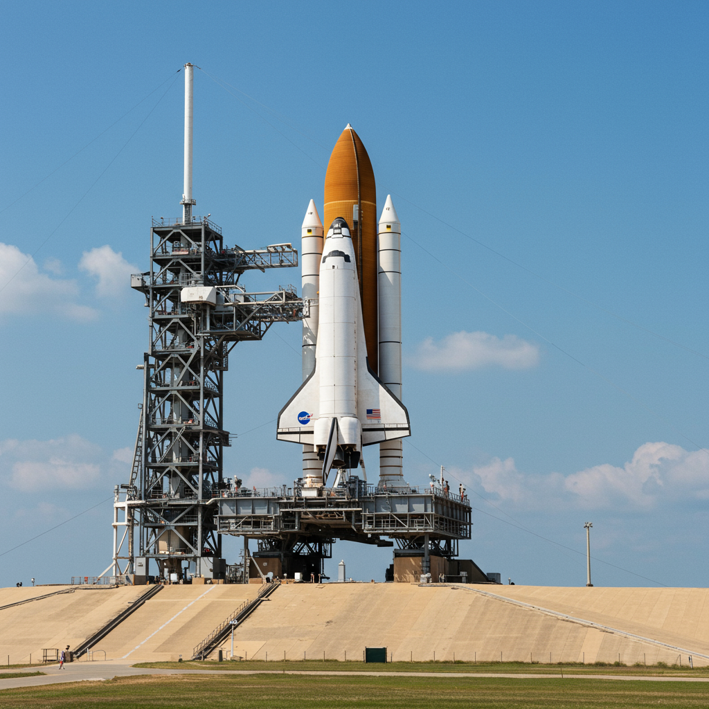

Columbia
Agencia: NASA
Lanzamiento: 12 de abril de 1981 – 12:00 UTC
Duración total: 2 días, 6 horas, 20 minutos
Tipo de misión: Misión inaugural del Transbordador Espacial
Vehículo: Columbia (OV-102)
Centro de lanzamiento: Kennedy Space Center – Plataforma 39A
Tripulación: John W. Young (Comandante), Robert L. Crippen (Piloto)
Objetivos de la misión
Verificar el rendimiento orbital del Transbordador Espacial Columbia en su primer vuelo tripulado. Evaluar capacidades de lanzamiento, maniobra en órbita y reingreso atmosférico.
Demostrar la reutilización del orbitador como vehículo espacial operacional.
Datos clave
Órbitas completadas: 37
Altitud orbital promedio: 280 km
Velocidad orbital: 27,870 km/h
Reingreso y aterrizaje: 14 de abril de 1981 en Edwards Air Force Base, California
Legado histórico
STS-1 marcó el primer vuelo de un vehículo espacial reutilizable. La misión fue un éxito total y sentó las bases del programa del Transbordador Espacial, que operó por tres décadas. John Young ya era veterano del Apolo 16, y Crippen voló por primera vez en esta histórica misión.